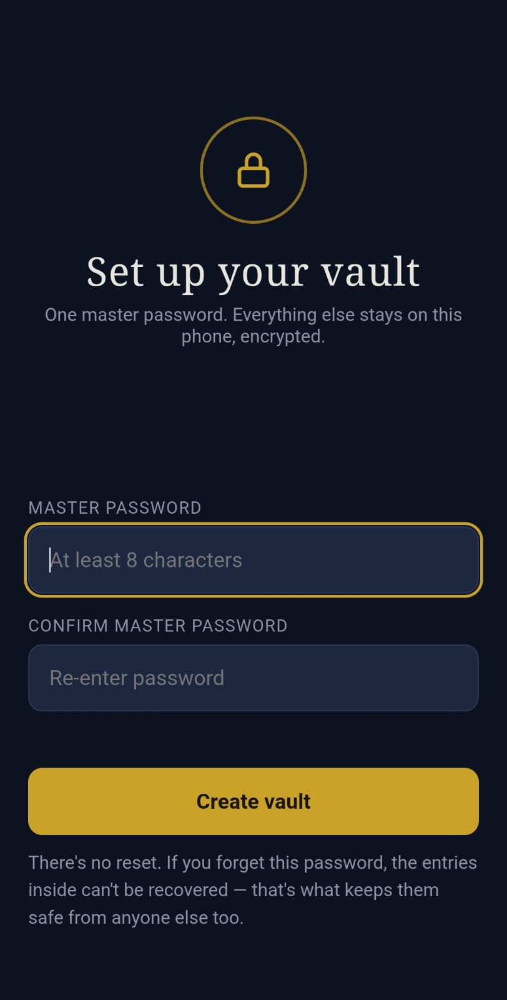
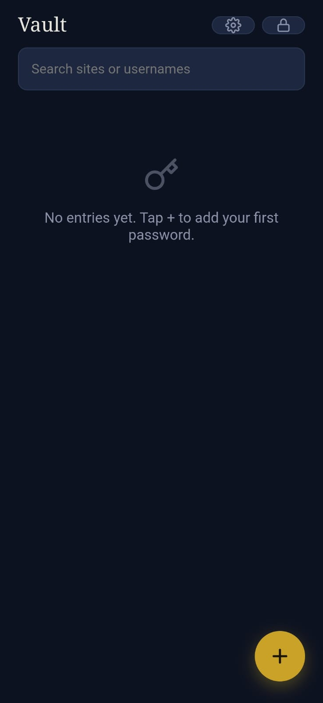
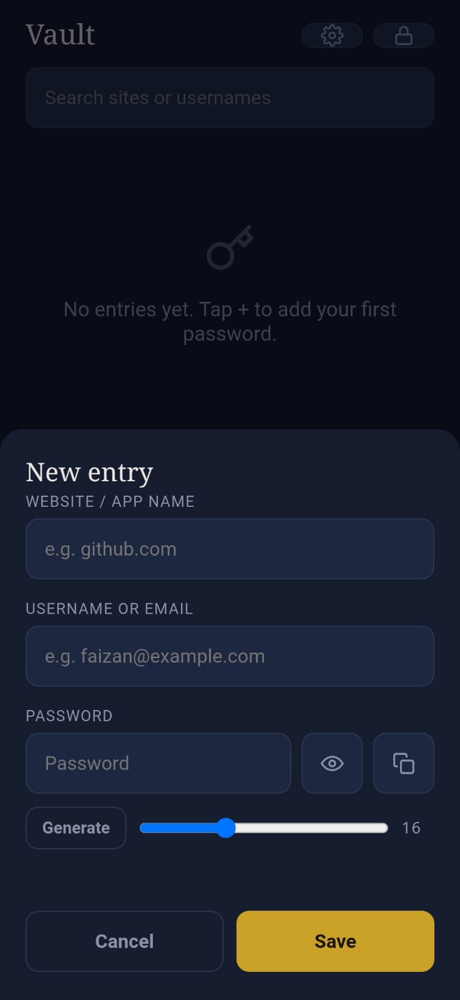
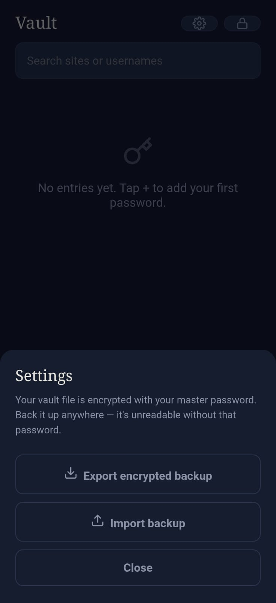

A fully offline Android password manager designed to address password reuse and insecure credential storage practices.
VIEW SOURCE CODEMany users still store their passwords in browsers, notes applications, or reuse the same password across multiple accounts.
This project explores a privacy-focused alternative by implementing a fully offline password manager protected by a master password.



